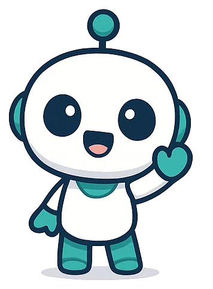

レポートビューア
AIが返したコードブロックを貼ると、レポートに仕上げてPDFにできます。

貼り付けた内容は外部に送信されません（フォント読み込みのみGoogle Fontsを使用）。
1. 届いたPARTを貼り付け

2. チェック結果
× 修正が必要 〇 参考・黄色はそのままで可 ◎ 問題なし
3. プレビュー
保存は必ずこのページの「PDFとして保存」から。
うまくいかないとき
- 印刷ダイアログが開いたら、送信先を「PDFに保存」にし、詳細設定の「背景のグラフィック」をON、「ヘッダーとフッター」をOFFにしてください。
- Safari・iPhone/iPadで印刷結果が空白になるときは、「HTMLをダウンロード」で保存したファイルをブラウザで開き、そこから印刷（Ctrl+P／⌘+P）してください。